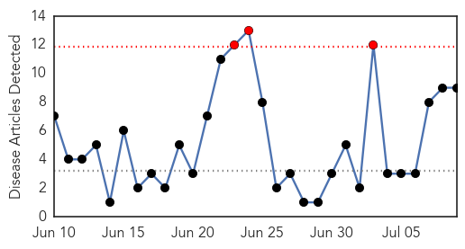

30 Day Trends
Web: 3 alerts, 0 warnings
Twitter: 0 alerts, 0 warnings
Top Articles:
- 0.971
- Quarantine rules for Haj pilgrims unveiled
- 0.962
- The Post
- 0.936
- Kabompo school meningitis outbreak mishandled
- 0.756
- Guidance on new meningitis vaccine leaves choice to parents; • Experts disagree on who should be able to receive the vaccine
- 0.717
- Hand, Foot and Mouth Disease
- 0.660
- Brain-Eating Amoebas Have Struck Again in Minnesota
- 0.639
- We need to early diagnose TB and treat with drugs that work
- 0.623
- DonutGate 2015: Ariana Grande's Donut-Licking Incident Was Gross, But Is It Really A Public Health Concern?
- 0.513
- Meningitis vaccination mandatory for Haj visa
Top Tweets:
-
No tweets found for Jul 09, 2015
Web/News Articles
Tweets

Article Locations

Article Confidences